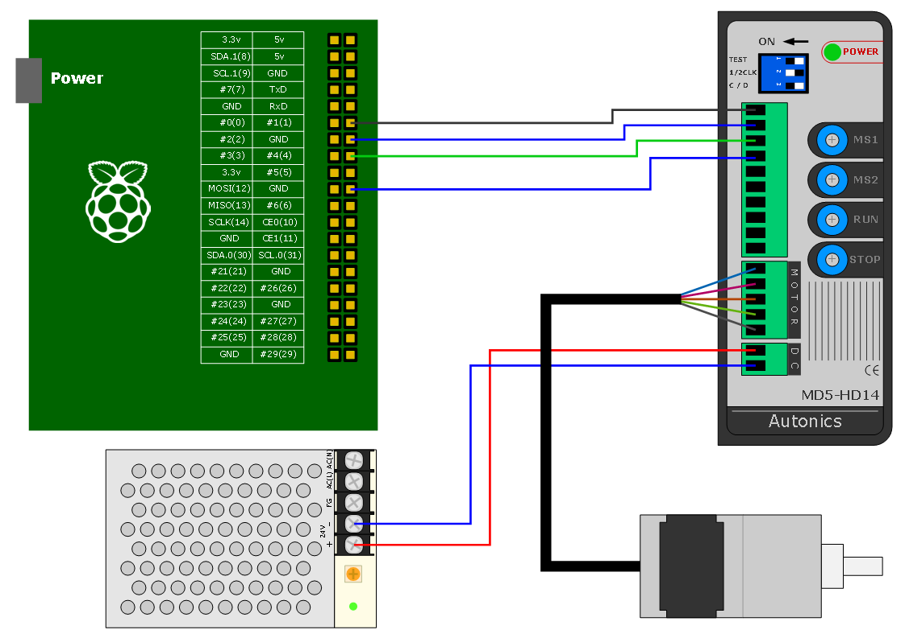
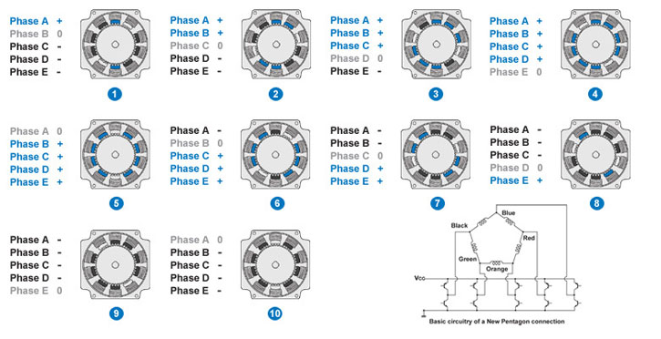

Step Motor Test with MD5-DH14 Motor Driver
여기서는 Raspberry Pi와 MD-DH14 Motor Driver를 이용하여 5Phase Pentagon방식의 Step Motor작동 테스트를 하였다.
사용된 하드웨어와 구성은 다음과 같다.
- Raspberry Pi Model B+
- MD5-HD14 Motor Driver
- 24V Power Supply
- 스텝모터 (A15K-S545-G10)

5Phase Step Motor는 작동 방식이 복잡한데 사실 Motor Driver가 알아서 구동시키므로 크게 고려할 필요는 없다. 참고로
대략적인 작동 방식은 다음 그림과 같다.
그림 출처: http://www.orientalmotor.com/technology/articles/2phase-v-5phase.html

MD5-HD14 Motor Driver를 이용한 Step Motor 작동은 간단하다. 외부에서 Pulse 신호를 주면 Driver는 1Pulse당
1Step씩 Motor를 움직인다. 여기서 Step 각도는 연결된 Motor에 따라 다른데 테스트에 사용된 스텝모터는
1Step당 0.072도씩 움직인다. 따라서 한바퀴를 돌리기 위해서는 5000Pulse가 필요하다. 모터 방향을 바꾸는 방법은 2가지가
있는데 Driver에 있는 1/2 CLK 스위치에 따라 1Pulse방식과 2Pulse방식이 있다. 1Pulse 방식은 CW 입력핀을
Pulse로 주고 CCW 입력핀에 따라 회전 방향을 결정하는 방식이다. 2Pulse방식은 CW 입력핀과 CCW 입력핀에
각각 Pulse를 주는 방식이다. 이 경우 동시에 Pulse가 입력되면 Motor가 작동 되지 않는다. 2Pulse 방식은 2개의 Pulse를
만들어야 하므로 테스트에는 1Pulse 방식을 사용하였다.
이제 Motor 구동에 필요한 Pulse를 만드는 코드를 다음과 같이 작성한다. Pulse를 만드는 방법에 대한 자세한 설명은
다음 페이지를 참고한다. 여기서는 GPIO를 이용하여 Pulse를 만들었다.
참고 사이트: Pulse Width Modulation(PWM) 출력 테스트
step.c
#include <stdio.h>
#include <wiringPi.h>
#define PULSE 5000
int main(void)
{
if(wiringPiSetup() == -1)
{
printf("Init Error\n");
return 1;
}
pinMode(1, OUTPUT);
pinMode(4, OUTPUT);
int pulse;
for(;;)
{
digitalWrite(4, 0);
for(pulse=0; pulse<PULSE; pulse++)
{
digitalWrite(1, 1);
delayMicroseconds(500);
digitalWrite(1, 0);
delayMicroseconds(500);
}
digitalWrite(4, 1);
for(pulse=0; pulse<PULSE; pulse++)
{
digitalWrite(1, 1);
delayMicroseconds(500);
digitalWrite(1, 0);
delayMicroseconds(500);
}
}
}
테스트 결과는 다음과 같다.